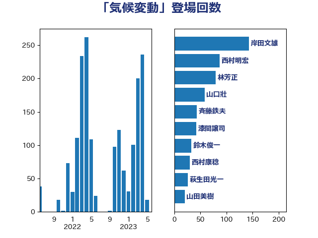

単語「気候変動」

| 小泉進次郎 | 自由民主党 | 307 回 |
| 岸田文雄 | 自由民主党 | 94 回 |
| 茂木敏充 | 自由民主党 | 94 回 |
| 山口壯 | 自由民主党 | 58 回 |
| 菅義偉 | 自由民主党 | 58 回 |
| 赤羽一嘉 | 公明党 | 36 回 |
| 笹川博義 | 自由民主党 | 31 回 |
| 源馬謙太郎 | 立憲民主党 | 29 回 |
| 漆間譲司 | 日本維新の会 | 29 回 |
| 萩生田光一 | 自由民主党 | 28 回 |
| 梶山弘志 | 自由民主党 | 25 回 |
| 寺田静 | 無所属 | 23 回 |
| 斉藤鉄夫 | 公明党 | 23 回 |
| 竹谷とし子 | 公明党 | 20 回 |
| 足立敏之 | 自由民主党 | 20 回 |
| 鈴木俊一 | 自由民主党 | 20 回 |
| 徳永エリ | 立憲民主党 | 19 回 |
| 林芳正 | 自由民主党 | 18 回 |
| 野上浩太郎 | 自由民主党 | 18 回 |
| 滝沢求 | 自由民主党 | 16 回 |
| 山際大志郎 | 自由民主党 | 15 回 |
| 舟山康江 | 国民民主党 | 14 回 |
| 土屋品子 | 自由民主党 | 13 回 |
| 山下芳生 | 日本共産党 | 12 回 |
| 篠原孝 | 立憲民主党 | 12 回 |
| 谷合正明 | 公明党 | 12 回 |
| 青木愛 | 立憲民主党 | 12 回 |
| 本田顕子 | 自由民主党 | 11 回 |
| 片山大介 | 日本維新の会 | 11 回 |
| 大岡敏孝 | 自由民主党 | 10 回 |
| 平山佐知子 | 無所属 | 10 回 |
| 平木大作 | 公明党 | 10 回 |
| 猪口邦子 | 自由民主党 | 10 回 |
| 緑川貴士 | 立憲民主党 | 10 回 |
| 上田清司 | 国民民主党 | 9 回 |
| 伊藤岳 | 日本共産党 | 9 回 |
| 山口那津男 | 公明党 | 9 回 |
| 山崎誠 | 立憲民主党 | 9 回 |
| 岩渕友 | 日本共産党 | 9 回 |
| 紙智子 | 日本共産党 | 9 回 |
| 三木亨 | 自由民主党 | 8 回 |
| 山添拓 | 日本共産党 | 8 回 |
| 岡田克也 | 立憲民主党 | 8 回 |
| 田嶋要 | 立憲民主党 | 8 回 |
| 石川博崇 | 公明党 | 8 回 |
| 金子恵美 | 立憲民主党 | 8 回 |
| ながえ孝子 | 無所属 | 7 回 |
| 中川康洋 | 公明党 | 7 回 |
| 佐藤英道 | 公明党 | 7 回 |
| 宮本徹 | 日本共産党 | 7 回 |
| 滝波宏文 | 自由民主党 | 7 回 |
| 牧山ひろえ | 立憲民主党 | 7 回 |
| 井上英孝 | 日本維新の会 | 6 回 |
| 加藤鮎子 | 自由民主党 | 6 回 |
| 古川元久 | 国民民主党 | 6 回 |
| 小沼巧 | 立憲民主党 | 6 回 |
| 水岡俊一 | 立憲民主党 | 6 回 |
| 熊谷裕人 | 立憲民主党 | 6 回 |
| 田村貴昭 | 日本共産党 | 6 回 |
| 矢倉克夫 | 公明党 | 6 回 |
| 石川香織 | 立憲民主党 | 6 回 |
| 福山哲郎 | 立憲民主党 | 6 回 |
| 角田秀穂 | 公明党 | 6 回 |
| 鈴木馨祐 | 自由民主党 | 6 回 |
| 高橋光男 | 公明党 | 6 回 |
| 高橋千鶴子 | 日本共産党 | 6 回 |
| 中野洋昌 | 公明党 | 5 回 |
| 井上信治 | 自由民主党 | 5 回 |
| 井上哲士 | 日本共産党 | 5 回 |
| 佐藤茂樹 | 公明党 | 5 回 |
| 小林鷹之 | 自由民主党 | 5 回 |
| 尾身朝子 | 自由民主党 | 5 回 |
| 朝日健太郎 | 自由民主党 | 5 回 |
| 浅野哲 | 国民民主党 | 5 回 |
| 笠井亮 | 日本共産党 | 5 回 |
| 美延映夫 | 日本維新の会 | 5 回 |
| 長坂康正 | 自由民主党 | 5 回 |
| 長浜博行 | 無所属 | 5 回 |
| 鷲尾英一郎 | 自由民主党 | 5 回 |
| 黄川田仁志 | 自由民主党 | 5 回 |
| 北神圭朗 | 無所属 | 4 回 |
| 宮口治子 | 立憲民主党 | 4 回 |
| 岩田和親 | 自由民主党 | 4 回 |
| 川田龍平 | 立憲民主党 | 4 回 |
| 横沢高徳 | 立憲民主党 | 4 回 |
| 櫛渕万里 | れいわ新選組 | 4 回 |
| 浜口誠 | 国民民主党 | 4 回 |
| 青柳仁士 | 日本維新の会 | 4 回 |
| おおつき紅葉 | 立憲民主党 | 3 回 |
| 上野通子 | 自由民主党 | 3 回 |
| 中島克仁 | 立憲民主党 | 3 回 |
| 中西祐介 | 自由民主党 | 3 回 |
| 勝部賢志 | 立憲民主党 | 3 回 |
| 国光あやの | 自由民主党 | 3 回 |
| 堤かなめ | 立憲民主党 | 3 回 |
| 大口善徳 | 公明党 | 3 回 |
| 宗清皇一 | 自由民主党 | 3 回 |
| 小里泰弘 | 自由民主党 | 3 回 |
| 山田勝彦 | 立憲民主党 | 3 回 |
| 杉久武 | 公明党 | 3 回 |
| 枝野幸男 | 立憲民主党 | 3 回 |
| 柴田巧 | 日本維新の会 | 3 回 |
| 武見敬三 | 自由民主党 | 3 回 |
| 江島潔 | 自由民主党 | 3 回 |
| 浜野喜史 | 国民民主党 | 3 回 |
| 渡辺周 | 立憲民主党 | 3 回 |
| 熊野正士 | 公明党 | 3 回 |
| 石井啓一 | 公明党 | 3 回 |
| 磯崎仁彦 | 自由民主党 | 3 回 |
| 若松謙維 | 公明党 | 3 回 |
| 重徳和彦 | 立憲民主党 | 3 回 |
| 階猛 | 立憲民主党 | 3 回 |
| 須藤元気 | 無所属 | 3 回 |
| 額賀福志郎 | 自由民主党 | 3 回 |
| 鬼木誠 | 立憲民主党 | 3 回 |
| 伊波洋一 | 無所属 | 2 回 |
| 佐藤啓 | 自由民主党 | 2 回 |
| 務台俊介 | 自由民主党 | 2 回 |
| 塩村あやか | 立憲民主党 | 2 回 |
| 塩田博昭 | 公明党 | 2 回 |
| 大野敬太郎 | 自由民主党 | 2 回 |
| 宮内秀樹 | 自由民主党 | 2 回 |
| 宮沢洋一 | 自由民主党 | 2 回 |
| 小宮山泰子 | 立憲民主党 | 2 回 |
| 小池晃 | 日本共産党 | 2 回 |
| 山口晋 | 自由民主党 | 2 回 |
| 岡本三成 | 公明党 | 2 回 |
| 岸真紀子 | 立憲民主党 | 2 回 |
| 平口洋 | 自由民主党 | 2 回 |
| 平林晃 | 公明党 | 2 回 |
| 庄子賢一 | 公明党 | 2 回 |
| 志位和夫 | 日本共産党 | 2 回 |
| 末松信介 | 自由民主党 | 2 回 |
| 末松義規 | 立憲民主党 | 2 回 |
| 松木けんこう | 立憲民主党 | 2 回 |
| 柳本顕 | 自由民主党 | 2 回 |
| 梅村みずほ | 日本維新の会 | 2 回 |
| 梅谷守 | 立憲民主党 | 2 回 |
| 森山浩行 | 立憲民主党 | 2 回 |
| 河野義博 | 公明党 | 2 回 |
| 泉健太 | 立憲民主党 | 2 回 |
| 清水真人 | 自由民主党 | 2 回 |
| 清水貴之 | 日本維新の会 | 2 回 |
| 牧原秀樹 | 自由民主党 | 2 回 |
| 田名部匡代 | 立憲民主党 | 2 回 |
| 田村まみ | 国民民主党 | 2 回 |
| 畦元将吾 | 自由民主党 | 2 回 |
| 石橋通宏 | 立憲民主党 | 2 回 |
| 福田昭夫 | 立憲民主党 | 2 回 |
| 細田健一 | 自由民主党 | 2 回 |
| 藤木眞也 | 自由民主党 | 2 回 |
| 赤嶺政賢 | 日本共産党 | 2 回 |
| 赤池誠章 | 自由民主党 | 2 回 |
| 足立康史 | 日本維新の会 | 2 回 |
| 近藤和也 | 立憲民主党 | 2 回 |
| 野中厚 | 自由民主党 | 2 回 |
| 金子恭之 | 自由民主党 | 2 回 |
| 長友慎治 | 国民民主党 | 2 回 |
| 関芳弘 | 自由民主党 | 2 回 |
| 馬場雄基 | 立憲民主党 | 2 回 |
| 麻生太郎 | 自由民主党 | 2 回 |
| 上川陽子 | 自由民主党 | 1 回 |
| 世耕弘成 | 自由民主党 | 1 回 |
| 中川郁子 | 自由民主党 | 1 回 |
| 中村裕之 | 自由民主党 | 1 回 |
| 中野英幸 | 自由民主党 | 1 回 |
| 伊佐進一 | 公明党 | 1 回 |
| 佐藤正久 | 自由民主党 | 1 回 |
| 加田裕之 | 自由民主党 | 1 回 |
| 加藤勝信 | 自由民主党 | 1 回 |
| 加藤竜祥 | 自由民主党 | 1 回 |
| 勝俣孝明 | 自由民主党 | 1 回 |
| 古川康 | 自由民主党 | 1 回 |
| 古川直季 | 自由民主党 | 1 回 |
| 古賀友一郎 | 自由民主党 | 1 回 |
| 吉田忠智 | 立憲民主党 | 1 回 |
| 吉良州司 | 無所属 | 1 回 |
| 大西英男 | 自由民主党 | 1 回 |
| 大野泰正 | 自由民主党 | 1 回 |
| 安江伸夫 | 公明党 | 1 回 |
| 小川淳也 | 立憲民主党 | 1 回 |
| 小渕優子 | 自由民主党 | 1 回 |
| 小田原潔 | 自由民主党 | 1 回 |
| 山岡達丸 | 立憲民主党 | 1 回 |
| 山岸一生 | 立憲民主党 | 1 回 |
| 岩屋毅 | 自由民主党 | 1 回 |
| 岩本剛人 | 自由民主党 | 1 回 |
| 新妻秀規 | 公明党 | 1 回 |
| 木村英子 | れいわ新選組 | 1 回 |
| 本田太郎 | 自由民主党 | 1 回 |
| 東徹 | 日本維新の会 | 1 回 |
| 松山政司 | 自由民主党 | 1 回 |
| 松川るい | 自由民主党 | 1 回 |
| 柴山昌彦 | 自由民主党 | 1 回 |
| 根本幸典 | 自由民主党 | 1 回 |
| 梅村聡 | 日本維新の会 | 1 回 |
| 森屋隆 | 立憲民主党 | 1 回 |
| 森本真治 | 立憲民主党 | 1 回 |
| 武部新 | 自由民主党 | 1 回 |
| 比嘉奈津美 | 自由民主党 | 1 回 |
| 江田憲司 | 立憲民主党 | 1 回 |
| 河野太郎 | 自由民主党 | 1 回 |
| 浜地雅一 | 公明党 | 1 回 |
| 浦野靖人 | 日本維新の会 | 1 回 |
| 渡辺猛之 | 自由民主党 | 1 回 |
| 田島麻衣子 | 立憲民主党 | 1 回 |
| 田村智子 | 日本共産党 | 1 回 |
| 白石洋一 | 立憲民主党 | 1 回 |
| 石井準一 | 自由民主党 | 1 回 |
| 石井章 | 日本維新の会 | 1 回 |
| 石原宏高 | 自由民主党 | 1 回 |
| 石原正敬 | 自由民主党 | 1 回 |
| 福重隆浩 | 公明党 | 1 回 |
| 稲津久 | 公明党 | 1 回 |
| 稲田朋美 | 自由民主党 | 1 回 |
| 穂坂泰 | 自由民主党 | 1 回 |
| 空本誠喜 | 日本維新の会 | 1 回 |
| 竹内真二 | 公明党 | 1 回 |
| 竹内譲 | 公明党 | 1 回 |
| 若宮健嗣 | 自由民主党 | 1 回 |
| 荒井優 | 立憲民主党 | 1 回 |
| 葉梨康弘 | 自由民主党 | 1 回 |
| 藤川政人 | 自由民主党 | 1 回 |
| 西岡秀子 | 国民民主党 | 1 回 |
| 西村康稔 | 自由民主党 | 1 回 |
| 西田昭二 | 自由民主党 | 1 回 |
| 谷川とむ | 自由民主党 | 1 回 |
| 赤澤亮正 | 自由民主党 | 1 回 |
| 道下大樹 | 立憲民主党 | 1 回 |
| 遠藤良太 | 日本維新の会 | 1 回 |
| 酒井庸行 | 自由民主党 | 1 回 |
| 野田国義 | 立憲民主党 | 1 回 |
| 鈴木義弘 | 国民民主党 | 1 回 |
| 阿達雅志 | 自由民主党 | 1 回 |
| 青山大人 | 立憲民主党 | 1 回 |
| 青山繁晴 | 自由民主党 | 1 回 |
| 音喜多駿 | 日本維新の会 | 1 回 |
| 高市早苗 | 自由民主党 | 1 回 |
| 高木かおり | 日本維新の会 | 1 回 |
| 高橋はるみ | 自由民主党 | 1 回 |